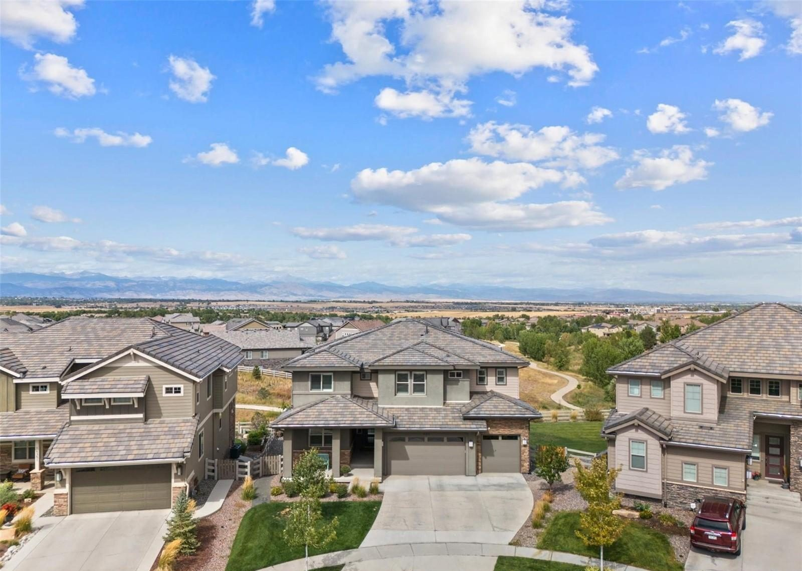
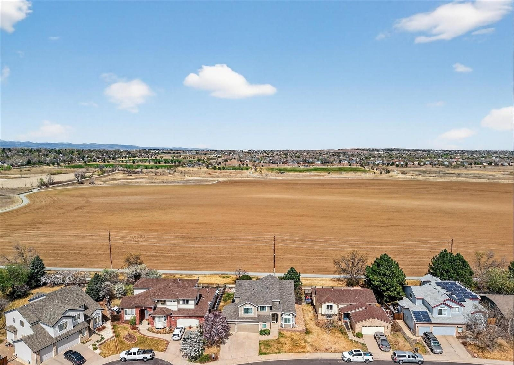
Communities
Broomfield Area Communities
Nine towns and two Broomfield neighborhoods. Open any of them for schools, parks and how people get around, then see what's for sale.
Where Steve works
Start with Broomfield, then follow US-36 and I-25
Steve lives in Broomfield and grew up in Arvada, and most of the homes he sells sit somewhere between Denver and Boulder.
Each community below opens to the basics: the county, the school districts, how people get around and what's nearby. Every one has its own page of current listings from REColorado, and the Broomfield page goes deepest.
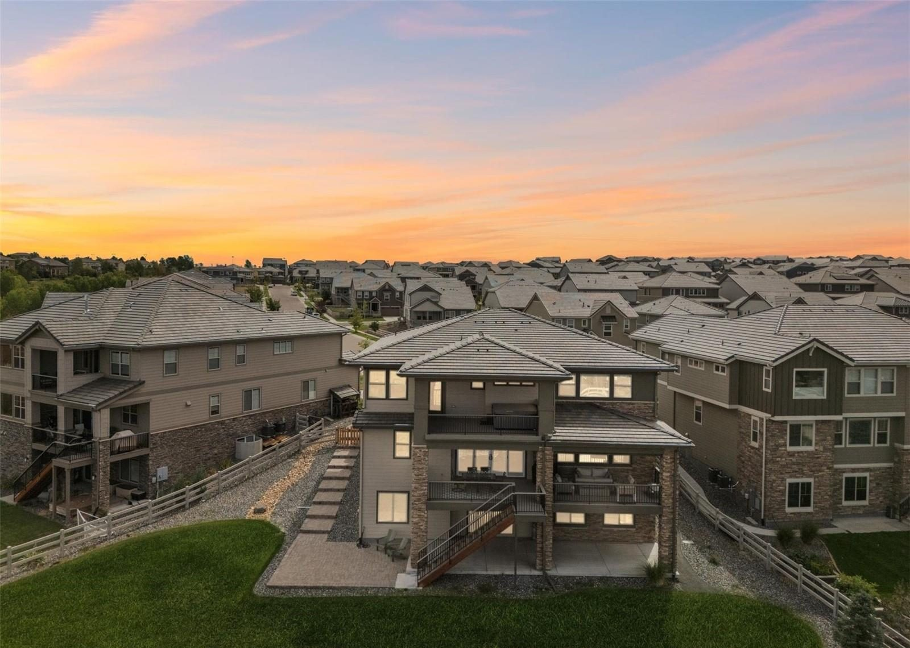
Anthem Highlands
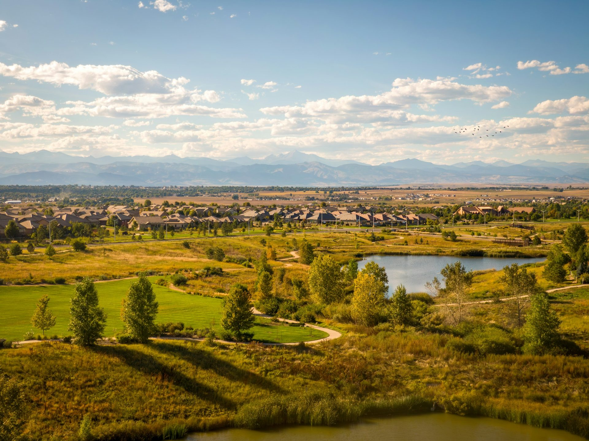
Greenway Park
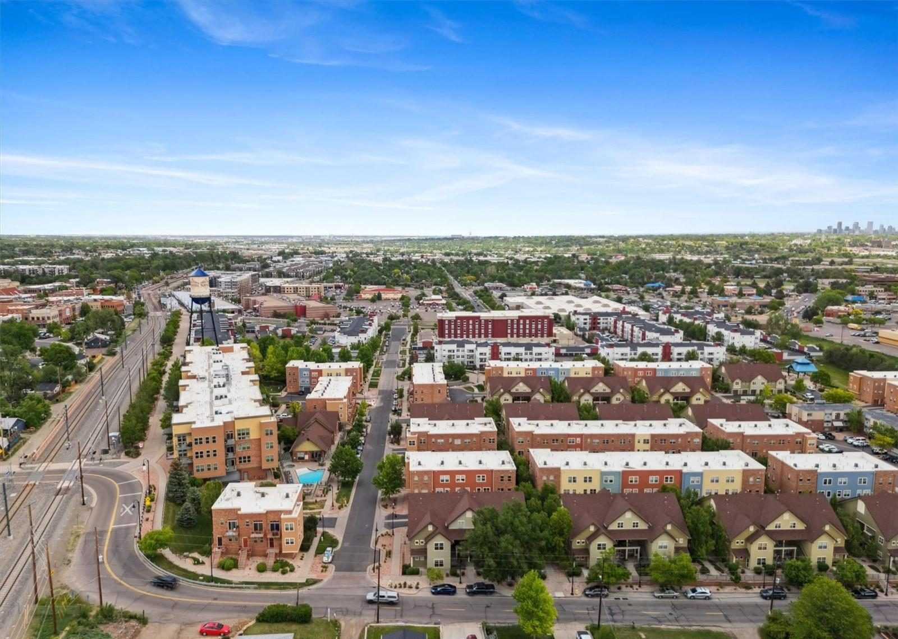
Arvada
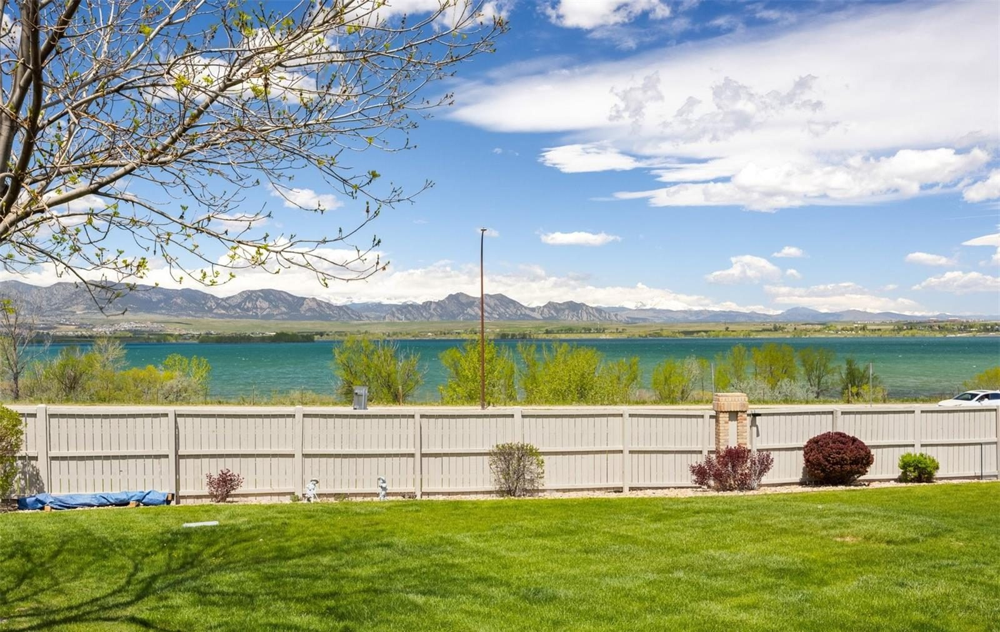
Westminster
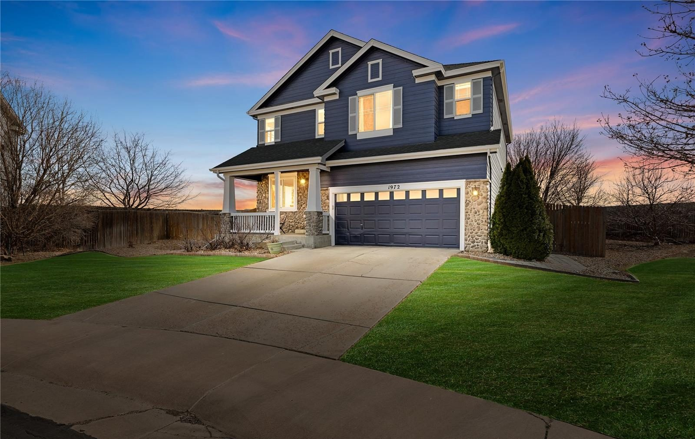
Thornton
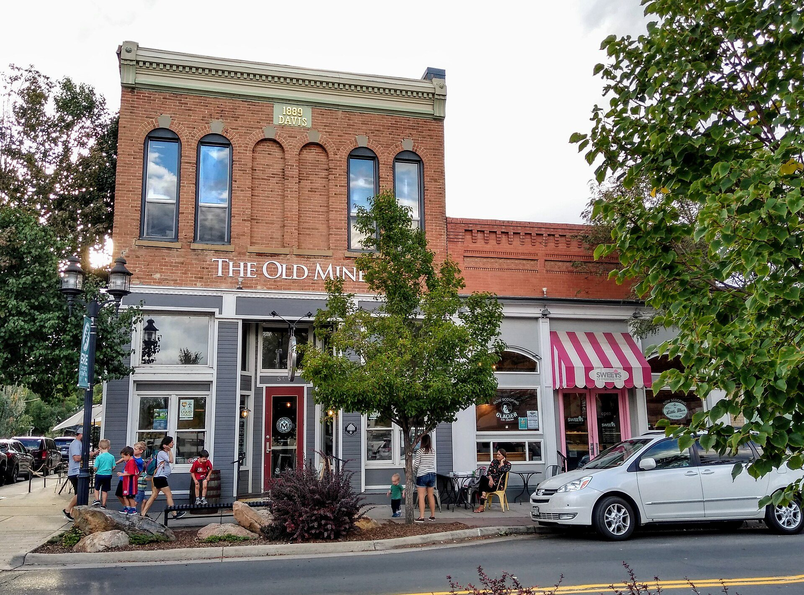
Photo: Erie Bard, CC BY-SA 4.0Erie
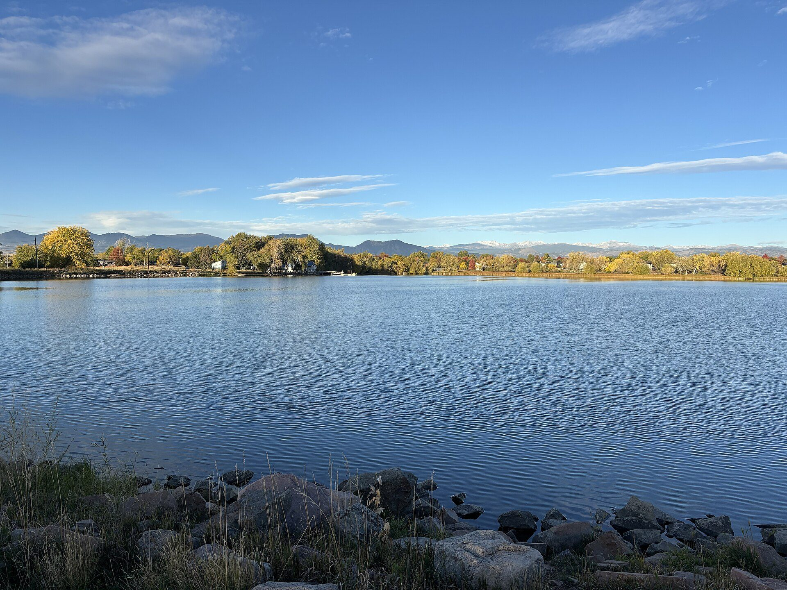
Lafayette
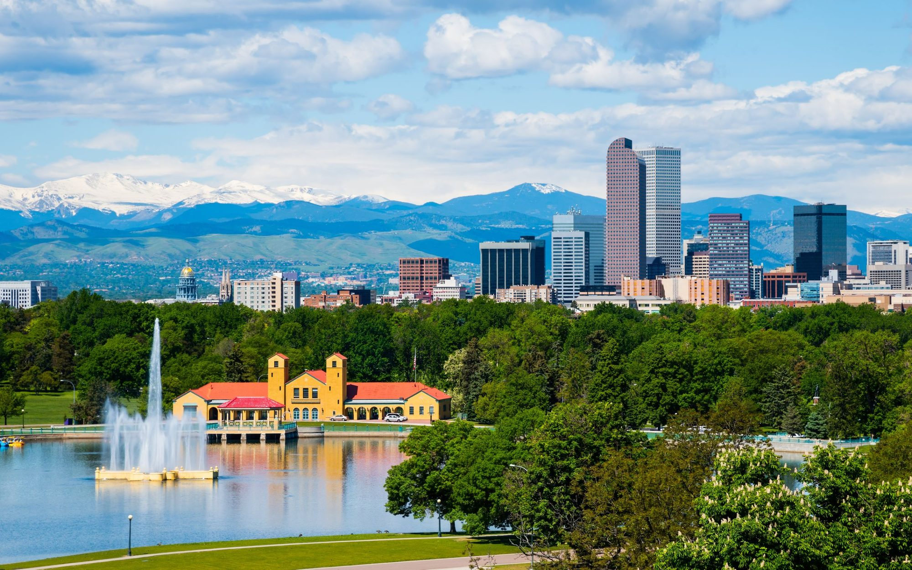
Denver
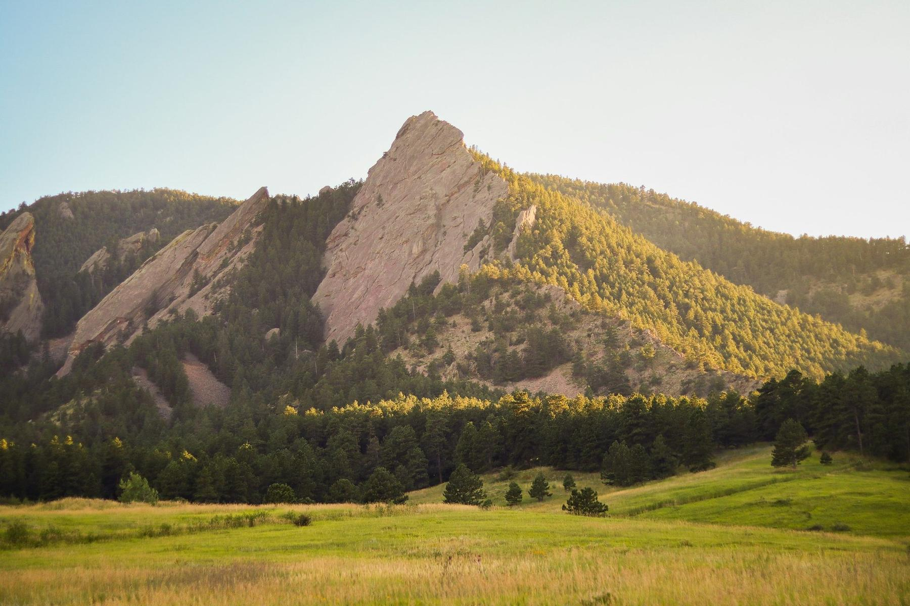
Boulder
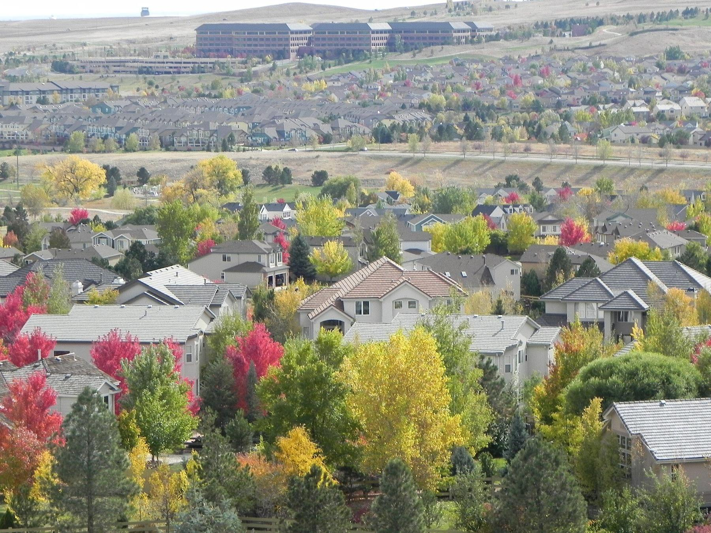
Photo: Pleiades Two, CC BY-SA 3.0Superior
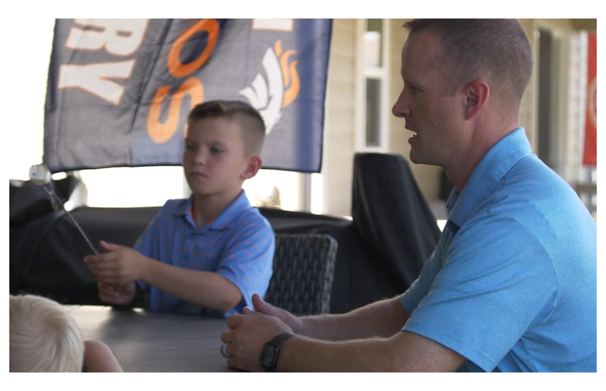
Choosing a town
Not sure which one fits?
Commute, schools and budget usually decide it, and they pull in different directions.
Tell Steve where you work, what you want nearby and what you want to spend, and he'll narrow the list to a few neighborhoods worth touring.
Resources
School district finders
District shares are by land area. Confirm a specific address with the district before you buy.
- City and County of BroomfieldCity services, parks and property records
- Adams 12 Five Star SchoolsSchool finder for Broomfield, Thornton and Westminster addresses
- Boulder Valley School DistrictBoulder, Lafayette, Superior and central Broomfield
- Jeffco Public SchoolsArvada, west Westminster and southwest Broomfield
- St. Vrain Valley SchoolsMost of Erie and north Broomfield
Contact
Tell Steve where you're looking
Call or text (720) 219-4801, or send a note through the contact page with the towns on your list.